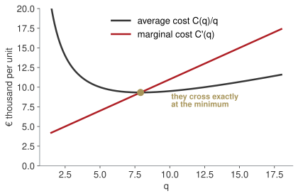
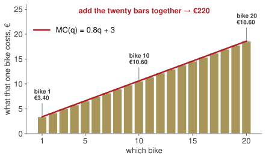

Week 3 · Thursday 8 October 2026 · 10:00–13:00
MBA03 Research & Quantitative Business Methods · European School of Economics, Florence
PAPER · 15 minutes
One of you takes us through it. One drill, and then the one sentence of your memo you are least sure of.
Not an exam: the point is to see how you got there.
Block AWhat a function is, once you have to use oneDomain first, always — written as an interval
Block BWhat happens near a point you cannot reach0/0 → factor, cancel, substitute. Average cost falls towards €400, never below
Block CWhat does one more bike do to profit?\pi'(q) = -8q + 1200: the 81st bike adds €560; zero at 150
Block DFrom the marginal back to the totalIntegrate, add + C, pin C with one known value
Today the pieces become one procedure: the full study of a function — the whole midterm.
| Wk | Date | What you can do by hand |
|---|---|---|
| 1 | 24 Sep | equations, quadratics, logs ✓ |
| 2 | 1 Oct | functions, limits, the derivative ✓ |
| 3 | 8 Oct | study a function; optimise; integrate |
| 4 | 15 Oct | interest, discounting, NPV |
| 5 | 22 Oct | bonds, duration, convexity |
Today is the midterm.
Not a rehearsal of part of it: the whole mathematical content of the midterm is the seven-step study you will do this morning, applied to a cost, a revenue and a profit function.
The last block, integration, is the remaining two items of the final’s calculus question.
There is a quiz in this session. It is short, it is not secret, and it covers weeks 1–3.
| 1 | domain — for which q does this mean anything? An interval. |
| 2 | limits — at the ends of the domain, and at any break: the asymptotes |
| 3 | range — what values the function actually takes |
| 4 | sign — where positive, where negative; the zeros are how you find out |
| 5 | maxima and minima — solve f'(q) = 0, then the sign of f'' names each one |
| 6 | convexity and inflection — where f'' changes sign |
| 7 | sketch — last, with every point above marked on it |
These are the brief’s own seven words, in the brief’s own order. Answer in its vocabulary and the marker cannot miss what you have done.
The same profit function you already know, taken apart in the exam’s order.
Block AThe study, done properlythe seven steps
Block BHow much should the firm produce?optimisation · MR = MC
Block CWhat did all of them add up to?integration
\pi(q) = -4q^{2} + 1200q - 60{,}000
[0, +∞) for a quantity.π(0) = −60,000; π(q) → −∞ as q → ∞. No asymptote: a polynomial has none.(−∞, 30,000] — it reaches its maximum and never exceeds it.63.4 and 236.6; positive between them.π'(q) = −8q + 1200 = 0 → q = 150; π''= −8 < 0, so a maximum, π(150) = 30,000.π''< 0 everywhere: concave throughout, no inflection.Board sentence
f' finds the candidates; f'' says which kind each one is. Writing “maximum” without the second derivative earns nothing.
Step 2 asks for limits, and limits are how you find asymptotes — the lines the curve approaches and never meets. The resit asks for them by name.
Vertical. Look at the edge of the domain. f(q) = 7 ln(q + 3) is defined for q > −3, and
\lim_{q \to -3^{+}} 7\ln(q+3) = -\infty
so the line q = −3 is a vertical asymptote.
Horizontal. Look at infinity. AC(q) = 0.4q + 3 + 25/q has none: it grows without bound. But (60,000 + 400q)/q → 400, so y = 400 is one.
A sketch with no asymptote drawn, where one exists, is marked as an incomplete sketch.
f'' > 0 \;\Rightarrow\; \text{convex, holds water, a minimum} f'' < 0 \;\Rightarrow\; \text{concave, spills water, a maximum}
An inflection is where f'' changes sign: the curve stops bending one way and starts bending the other. In business that is where growth stops accelerating and begins to slow — the moment worth naming in a report.
PAPER · drills.md
15 minutes. This is the midterm’s Q2 with different numbers. Write all seven steps, labelled.
Block AThe study, done properlythe seven steps
Block BHow much should the firm produce?optimisation · MR = MC
Block CWhat did all of them add up to?integration

Bet before we compute
Marginal cost crosses average cost. Is the crossing to the left of the minimum, at it, or to the right?
C(q) = 0.4q² + 3q + 25, so AC(q) = 0.4q + 3 + 25/q.
AC'(q) = 0.4 - \frac{25}{q^{2}} = 0 \;\Rightarrow\; q^{2} = 62.5 \;\Rightarrow\; q \approx 7.91
There AC = 9.32 and C'(7.91) = 9.32. Equal.
While the next unit costs less than the average, it pulls the average down. When it costs more, it pushes it up. The average stops falling exactly when the two meet.
\pi'(q) = 0 \quad\Longleftrightarrow\quad R'(q) = C'(q)
Produce up to the point where the revenue from one more unit equals what that unit costs.
For R(q) = 30 ln(q+1) and C(q) = 0.4q² + 3q + 25:
\frac{30}{q+1} = 0.8q + 3 \;\Rightarrow\; 4q^{2} + 19q - 135 = 0 \;\Rightarrow\; q \approx 3.90
LAB · session.ipynb § B
The second one has a lesson in it. Watch what changes and what does not.
PAPER · drills.md
12 minutes. In D5 say what the firm should do, in a sentence, before you compute anything.
Block AThe study, done properlythe seven steps
Block BHow much should the firm produce?optimisation · MR = MC
Block CWhat did all of them add up to?integration
Marginal cost is not “the cost”. It is the cost of the next one, and it is different for every one.
| the 1st bike | MC ≈ 3.40 |
the line is easy, nothing is strained |
| the 10th bike | MC ≈ 10.60 |
overtime starts, parts cost more |
| the 20th bike | MC ≈ 18.60 |
the plant is pushed |
Bet before we compute
So what do the first twenty together cost? Write a number.

Twenty bikes, twenty price tags, twenty bars. Pile them up and you have the total cost.
The bars sum to exactly €220. Nothing has been approximated: each bar is one bike, and we added up all twenty.
A bike is a lump. But suppose you could make half a bike, then a tenth, then a thousandth.
The bars get thinner, there are more of them, and the pile becomes the area under the line.
That area has a name and a symbol, and the symbol is a stretched S for sum:
\int_{0}^{20} MC(q)\,dq
Integration is not a new idea. It is adding up price tags, with the tags made infinitely thin.
180, then 200, then 212, then 217 — climbing to 220.
\int q^{n}\,dq = \frac{q^{n+1}}{n+1} + c \quad (n \neq -1) \int \frac{1}{q}\,dq = \ln|q| + c \int \frac{f'(q)}{f(q)}\,dq = \ln|f(q)| + c
The exam’s integral always arrives as a fraction. Divide term by term first:
\frac{q^{5} - 3q^{3} + 2}{q^{2}} = q^{3} - 3q + 2q^{-2}
Now each term is a power, or a log.
The third rule is the one people arrive without, and the exam uses it.
A log appears whenever the top is the derivative of the bottom — exactly, or up to a constant you can factor out.
\int \frac{1}{q-1}\,dq = \ln|q-1| + c
The bottom differentiates to 1. A shifted log, nothing more.
\int \frac{q}{q^{2}-1}\,dq = \tfrac{1}{2}\ln|q^{2}-1| + c
The bottom differentiates to 2q; the top is q, so put the missing ½ out front.
Before integrating any fraction, ask one question: is the top the derivative of the bottom? If yes, it is a log. If no, divide term by term and use the power rule.
\int_{0}^{20} (0.8q + 3)\,dq = \Big[0.4q^{2} + 3q\Big]_{0}^{20} = 220
And the one worth remembering:
\int_{100}^{150} \pi'(q)\,dq = \pi(150) - \pi(100) = €10{,}000
The integral of the marginal is the change in the total. That sentence is the whole of integration.
Board sentence
Differentiate to ask what one more does. Integrate to ask what all of them did.
PAPER · drills.md
15 minutes. D7 and D8 are two of the five items of the final’s calculus question, verbatim in form.
20 minutes · weeks 1–3 · not secret, not a trap
Five short items: one domain, one limit, one derivative with its managerial reading, one stationary point with its nature, one integral.
Marked and returned next week. It counts for nothing and tells us both a great deal.
f' finds the point, f'' names it.Homework 3 (homework.md), due Wednesday 14 October 23:59: seven drills plus a 400–500 word Board report — a dry run of the midterm, with a hand-drawn sketch.
Write your own three take-home lines now, before you leave.
← Course site · Research & Quantitative Business Methods · ESE Florence